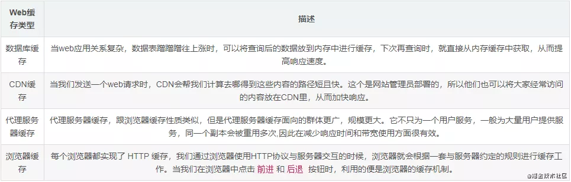
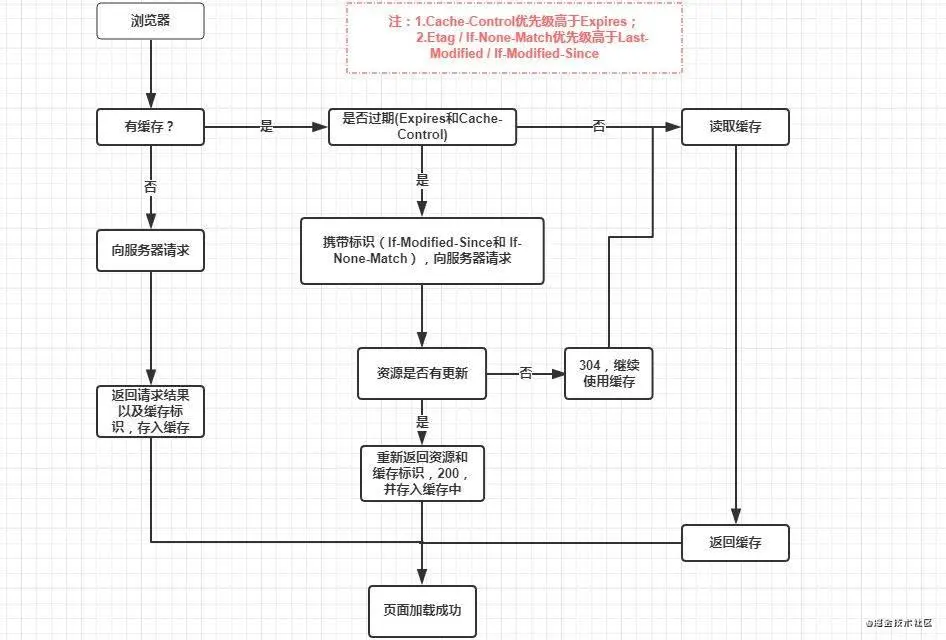
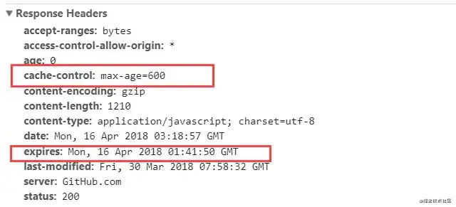
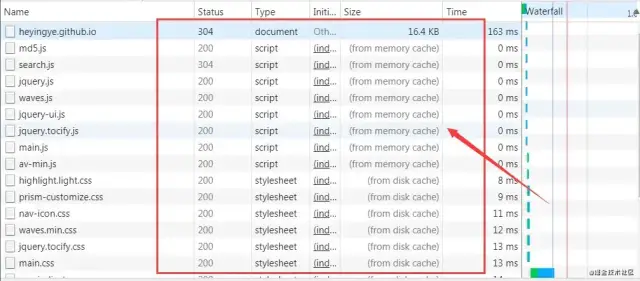
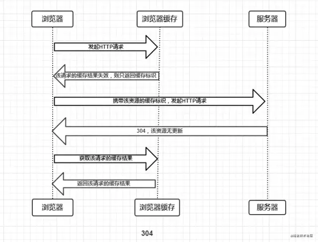
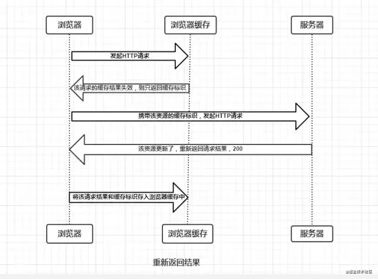

浏览器缓存
Web缓存种类
- 数据库缓存 （服务端）
- CDN缓存 （网络层）
- 代理服务器缓存 （伪服务端）
- 浏览器缓存 （客户端和服务端）

所谓浏览器缓存其实就是指在本地使用的计算机中开辟一个 内存区 ，同时也开辟一个硬盘区作为数据传输的 缓冲区 ，然后用这个缓冲区来暂时保存用户以前访问过的信息。
浏览器缓存过程
浏览器缓存位置一般分为四类
Service Worker --> Memory Cache --> Disk Cache --> Push Cache。
强缓存
- 状态码：200
- 我们第一次进入页面，请求服务器，然后服务器进行应答，浏览器会根据 response Header 来判断是否对资源进行缓存，如果响应头中 expires 、pragma 或者 cache-control 字段，代表这是 强缓存 ，浏览器就会把资源缓存在memory cache 或 disk cache中。
- 第二次请求时，浏览器判断请求参数，如果符合强缓存条件就直接返回状态码200，从本地缓存中拿数据。否则把响应参数存在request header请求头中，看是否符合协商缓存，符合则返回状态码304，不符合则服务器会返回全新资源。

- expires: HTTP1.0 缓存到期的时间戳 （使用本地时间判断，本地时间可修改）
-
Cache-Control: HTTP1.1 的缓存字段， 优先级比 expires 高
取值：
- public：资源客户端和服务器都可以缓存。
- privite：资源只有客户端可以缓存。
- no-cache：客户端缓存资源， 但是是否缓存需要经过 协商缓存 来验证。
- no-store：不使用缓存 。
-
max-age：缓存保质期（相对时间，解决了expires的问题）

- pragma：HTTP1.0中禁用网页缓存的字段，其取值为no-cache，和Cache-Control的no-cache效果一样。
与缓存控制相关的HTTP头字段表，包含强缓存和弱缓存

缓存位置
强缓存我们会把资源放到memory cache 和 disk cache中

- 存储图像和网页等资源主要缓存在disk cache
- 操作系统缓存文件等资源大部分都会缓存在memory cache中
- 具体操作浏览器自动分配，看谁的资源利用率不高就分给谁。
- 查找浏览器缓存时会按顺序查找: Service Worker --> Memory Cache --> Disk Cache --> Push Cache。
1、Service Worker
是运行在浏览器背后的独立线程，一般可以用来实现缓存功能。使用 Service Worker的话，传输协议必须为 HTTPS。因为 Service Worker 中涉及到请求拦截，所以必须使用 HTTPS 协议来保障安全。Service Worker 的缓存与浏览器其他内建的缓存机制不同，它可以让我们自由控制缓存哪些文件、如何匹配缓存、如何读取缓存，并且缓存是持续性的。
2、Memory Cache
内存中的缓存，主要包含的是当前中页面中已经抓取到的资源，例如页面上已经下载的样式、脚本、图片等。读取内存中的数据肯定比磁盘快，内存缓存虽然读取高效，可是缓存持续性很短，会随着进程的释放而释放。一旦我们 关闭 Tab 页面 ，内存中的缓存也就被释放了。
3、Disk Cache
- 存储在硬盘中的缓存，读取速度慢点，但是什么都能存储到磁盘中，比之 Memory Cache 胜在容量和存储时效性上。
- 在所有浏览器缓存中，Disk Cache 覆盖面基本是最大的。它会根据 HTTP Herder 中的字段判断哪些资源需要缓存，哪些资源可以不请求直接使用，哪些资源已经过期需要重新请求。并且即使在跨站点的情况下，相同地址的资源一旦被硬盘缓存下来，就不会再次去请求数据。绝大部分的缓存都来自 Disk Cache。
- memory cache 要比 disk cache 快的多。举个例子：从远程 web 服务器直接提取访问文件可能需要500毫秒(半秒)，那么磁盘访问可能需要10-20毫秒，而内存访问只需要100纳秒，更高级的还有 L1缓存访问(最快和最小的 CPU 缓存)只需要0.5纳秒。
- prefetch cache(预取缓存) link标签上带了prefetch，再次加载会出现。prefetch是预加载的一种方式，被标记为prefetch的资源，将会被浏览器在空闲时间加载。
4、Push Cache
Push Cache（推送缓存）是 HTTP/2 中的内容，当以上三种缓存都没有命中时，它才会被使用。它只在会话（Session）中存在，一旦会话结束就被释放，并且缓存时间也很短暂，在Chrome浏览器中只有5分钟左右，同时它也并非严格执行HTTP头中的缓存指令。
5、CPU、内存、硬盘
协商缓存
协商缓存就是强缓存失效后，浏览器携带缓存标识向服务器发送请求，由服务器根据缓存标识来决定是否使用缓存的过程。
主要有以下两种情况：
-
协商缓存生效，返回304

-
协商缓存失效，返回200和请求结果

协商缓存相关HTTP头字段
-
Last-Modified / If-Modified-Since
- Last-Modified：是服务器响应请求时，返回该资源文件在服务器最后被修改的时间。
- If-Modified-Since：是客户端再次发起该请求时，携带上次请求返回的Last-Modified值，通过此字段值告诉服务器该资源上次请求返回的最后被修改时间。服务器收到该请求，发现请求头含有If-Modified-Since字段，则会根据If-Modified-Since的字段值与该资源在服务器的最后被修改时间做对比，若服务器的资源最后被修改时间大于If-Modified-Since的字段值，则重新返回资源，状态码为200；否则则返回304，代表资源无更新，可继续使用缓存文件。
-
Etag / If-None-Match
- Etag：是服务器响应请求时，返回当前资源文件的一个唯一标识(由服务器生成)。
- If-None-Match：是客户端再次发起该请求时，携带上次请求返回的唯一标识Etag值，通过此字段值告诉服务器该资源上次请求返回的唯一标识值。服务器收到该请求后，发现该请求头中含有If-None-Match，则会根据If-None-Match的字段值与该资源在服务器的Etag值做对比，一致则返回304，代表资源无更新，继续使用缓存文件；不一致则重新返回资源文件，状态码为200。
- Etag / If-None-Match优先级高于Last-Modified / If-Modified-Since，同时存在则只有Etag / If-None-Match生效。
缓存方案
- HTML: 协商缓存；
- css、js、图片：强缓存，文件名带上hash